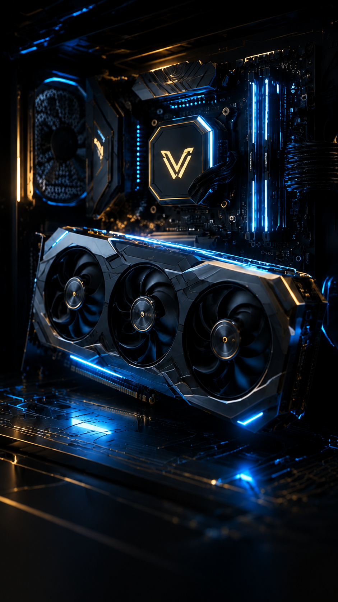
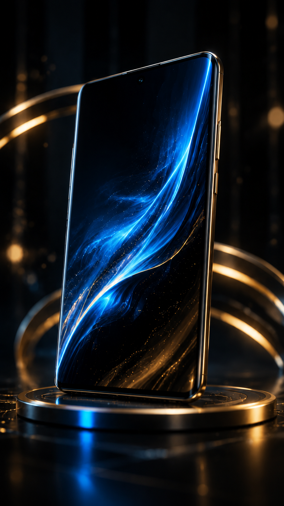

AI NEWS
جدیدترین تحولات هوش مصنوعی جهان
بررسی مدلهای جدید هوش مصنوعی، ابزارهای مولد، دستیارهای هوشمند و آینده فناوری AI.
مطالعه خبر →جدیدترین اخبار AI، کامپیوتر، سختافزار، موبایل و فناوری آینده
بررسی مدلهای جدید هوش مصنوعی، ابزارهای مولد، دستیارهای هوشمند و آینده فناوری AI.
مطالعه خبر →
اخبار پردازندهها، کارتهای گرافیک، لپتاپها و فناوریهای جدید سختافزاری.
مطالعه خبر →
معرفی گوشیهای جدید، تراشهها، دوربینها، سیستمعاملها و فناوری آینده موبایل.
مطالعه خبر →تحلیل و بررسی مهمترین اتفاقات دنیای هوش مصنوعی، کامپیوتر و موبایل
بررسی مدلهای زبانی بزرگ، هوش مصنوعی مولد، ابزارهای هوشمند و تاثیر AI بر آینده کسبوکارهای دیجیتال.
مشاهده تحلیل →بررسی فناوریهای جدید سختافزاری، پردازندهها، کارت گرافیک، لپتاپهای نسل آینده و سیستمهای قدرتمند.
مشاهده خبر →تحلیل فناوری نمایشگرها، تراشههای موبایل، دوربینها، سیستمعاملها و مسیر آینده تلفنهای هوشمند.
مشاهده خبر →در Soravin فقط خبر منتشر نمیشود؛ تاثیر واقعی فناوریها بررسی و تحلیل میشود.
سرعت تغییرات در دنیای تکنولوژی بسیار زیاد است. هدف این بخش بررسی تاثیر هوش مصنوعی، سختافزار و فناوریهای جدید بر آینده دیجیتال است.
در آینده این بخش به سیستم هوشمند جمعآوری و انتشار اخبار فناوری متصل خواهد شد.
جدیدترین خبرهای هوش مصنوعی، کامپیوتر، سختافزار و موبایل
جدیدترین مدلهای AI، ابزارهای هوشمند، دستیارهای دیجیتال و اتفاقات مهم حوزه هوش مصنوعی.
ادامه مطلب →اخبار پردازندهها، کارت گرافیک، لپتاپها، سیستمهای حرفهای و فناوریهای جدید کامپیوتری.
ادامه مطلب →جدیدترین گوشیها، تراشههای موبایل، سیستمعاملها و فناوریهای آینده تلفنهای هوشمند.
ادامه مطلب →بررسی آینده مدلهای زبانی، کاربردهای حرفهای و تاثیر آنها بر کار و زندگی دیجیتال.
بیشتر بدانید →تحلیل مسیر آینده CPU، GPU و سیستمهای محاسباتی قدرتمند.
بیشتر بدانید →